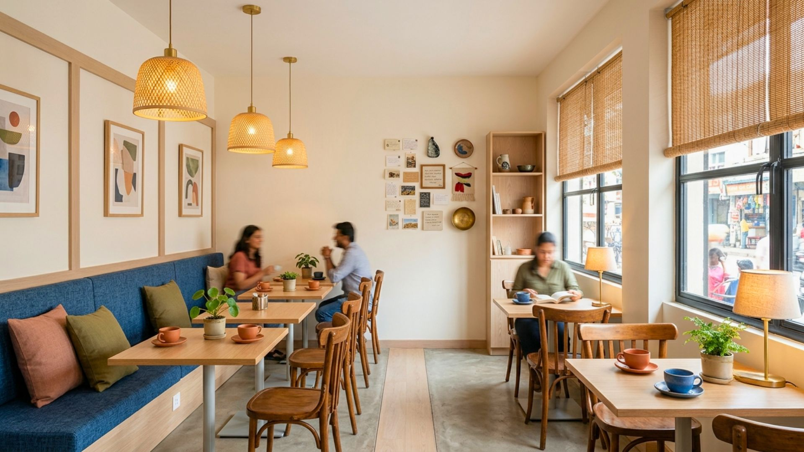
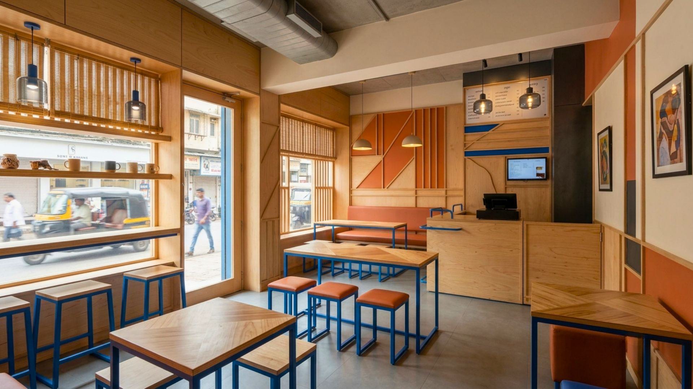
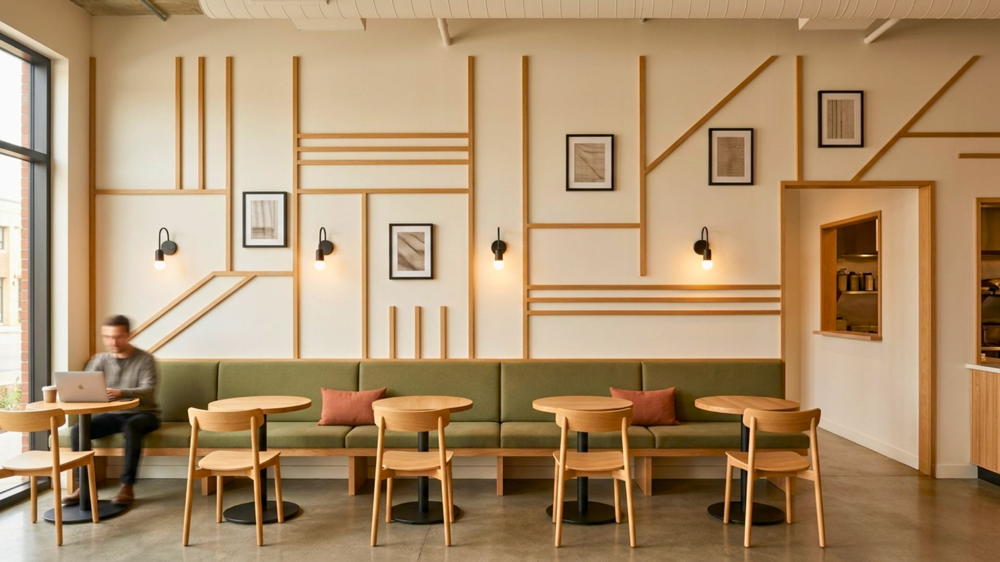
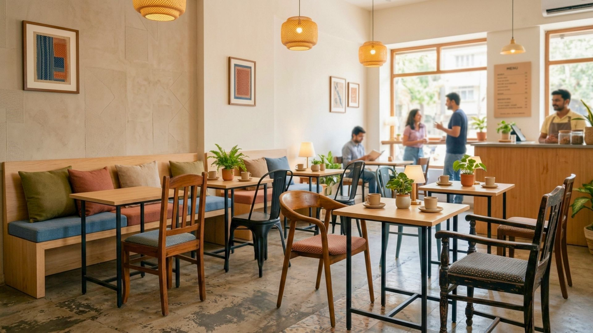

So, if you want to not only attract new customers, but also retain your loyal clientele, you need to appease to their sensibilities, so that people personally identify the design of your cafe as theirs, and forge a bond with you by feeling as if they belong to your space. By learning how to make your coffee shop more personal and specialized, you can increase your profits while allowing your employees to focus more of their attention on customer satisfaction.
So, what are the things that define a thriving cafeteria? Primarily, the first thing to grab your customer’s eye even before they decide to partake your services is the ambience of your café and the interior design. So, let’s talk about 5 tips that are easy on your pocket but effective nonetheless to redefine the décor of your coffee shop with limited funds.
1. Give Your Furniture a Makeover

Now, you don’t need to roll your eyes, nobody is expecting you to go the long haul; there are several ways you can redefine the way your furniture is organized and decorated. You can go for very out of the box yet simple seating or scout flea markets and second hand dealers to get some unique or antique furniture that will add just the right amount of chutzpah to your café’s interior design.
2. Indulge in Some Moldings

Molding is defined as any trim that is added to a constructed site to cover gaps where different building materials come together, normally at the intersections of walls and ceilings. Although, originally installed for practical reasons, moldings over time have been increasingly used to improve the aesthetic value of the place. So, get in touch with a competitive interior designer who is experienced with coffee shop interiors and who will creatively help you mount trims on your walls to give your café a definite identity. Wood trims are easily available and pocket friendly too.
3. Flexible Seating Area

This is one of the oldest tricks in the book, if you simply rearrange the way you place your guests, chances are that you’d get them to think you’ve renovated the place. And, a new place brings in fresh vibes and who doesn’t like indulging in the new when they’ve outgrown the old.
4. Add Some Light and Colour to Your Space

Colors and lighting can either entice someone to drink and eat or put them off. Pay special importance to the mood you want to create depending on your target customers’ age and preferences. You can also bring on colors as art or artifact displays and lights as interior accessories. Warm lighting and creating lit and dark spots enhances café spaces.
5. Accessorize Your Doors/Windows
Whilst finalizing window treatments, stick with elegant and organic materials for a more personal touch. If draperies are not for you, then try woven bamboo shades or wood blinds. Just make sure to dress your windows to ensure it complements your café’s interior design and makes your shop look elegant and well-designed.
Conclusion
To summarize, it is important to understand that designing a coffee shop isn’t just about getting the right look, serving the best coffee or providing excellent customer service. It’s about creating an experience that not only promotes your café but also makes people feel good that they’ve tasted the best coffee in the best hangout space they’ve known.
At SprintCo, we aim to make your coffee shop stand out on creativity, individuality and productivity. Our designs are conceptualized keeping the target customers in mind to ensure that each patron has a great experience and returns for more. We’ve worked with some of the best cafés in the city and will be glad to assist you in a one-stop, full service, turnkey interior design package to help you not only make a mark but also create a niche in the land of brewing coffee shops.